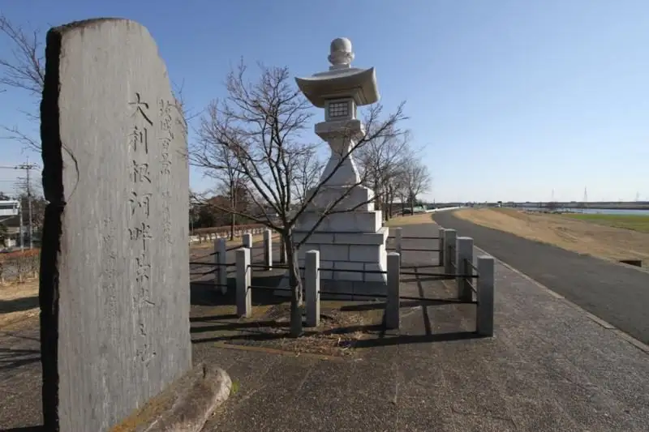
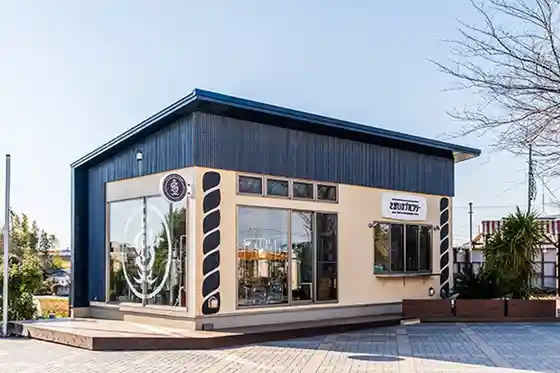
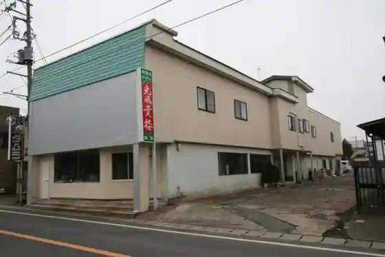
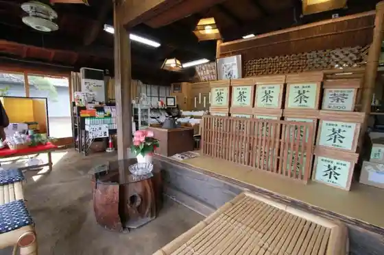

Sakaimachi
Sakaimachi · Ibaraki
Sakaimachi
Highlighted on the Ibaraki map.

Sights
Roadside Station Sakai

Ibaraki Hyakkei Memorial Park
Sakaimachi Folk History Museum
Kofu Takashi Ro

Chataro ’s cafe Yama no

Ichigo Marushie
S-Gallery